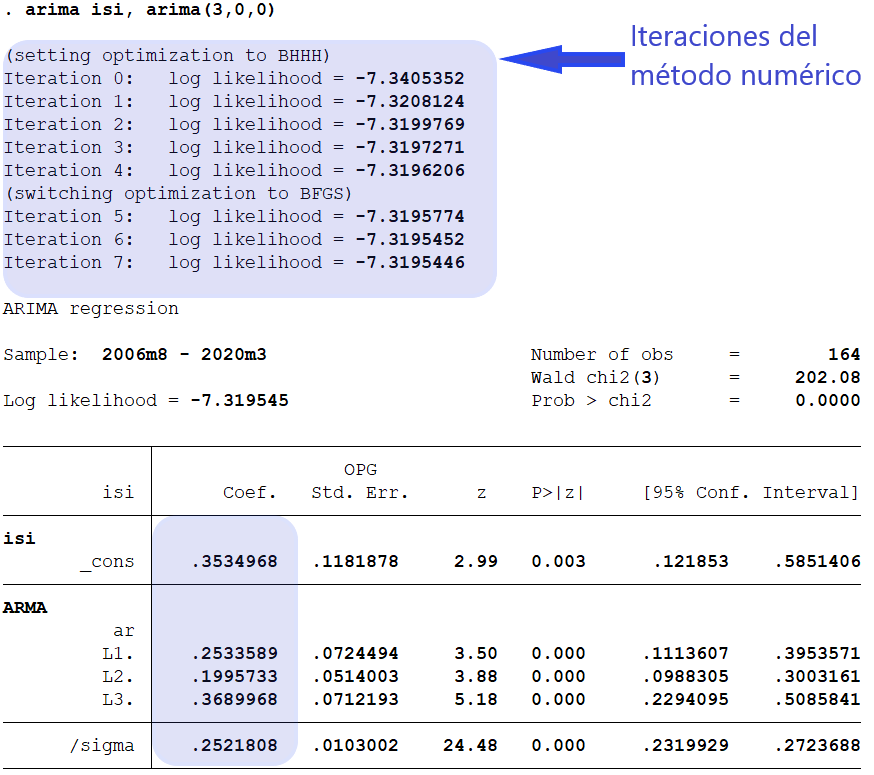
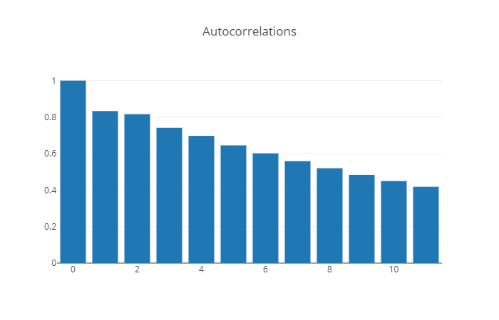

Estimación de modelos ARMA
Contents
import bccr
import matplotlib.pyplot as plt
plt.style.use('seaborn')
import numpy as np
import pandas as pd
from statsmodels.tsa.arima.model import ARIMA
from statsmodels.graphics.tsaplots import plot_acf, plot_pacf
3.5. Estimación de modelos ARMA#
Introducción (muy breve) al estimador de máxima verosimilitud#
Sea \(f(y| \theta)\) la función de densidad conjunta de la variable \(Y=[Y_1, \dots, Y_n]\). Entonces, para una muestra observada \(\mathbf{y}\) de esta distribución, la función del vector de parámetros \(\theta\) definida por
Note
se conoce como la función de verosimilitud.
El estimador de máxima verosimilitud es el valor del vector de parámetros \(\theta\) que maximiza la función de verosimilitud
Es decir, \(\hat{\theta}_{\text{ML}}\) es el parámetro que hace más plausible haber obtenido la muestra \(\mathbf{y}\) si la verdadera distribución era \(f(y|\theta)\).
Supongamos que tenemos una muestra \(\left\{x_1, \dots,x_N\right\}\) de valores tomados de realizaciones independientes de una distribución exponencial con parámetro \(\lambda\)
La función de densidad de una observación es \(f(x|\lambda) = \lambda e^{-\lambda x}\)
La función de verosimilitud es la probabilidad conjunta de observar esta muestra:
o bien, tomando su logaritmo
Para encontrar el máximo:
Por lo tanto, el estimador de máxima verosimilitud es:
donde \(\bar{x}\) es el promedio simple de los datos.
Estimación de modelos ARMA#
Pensemos en un proceso ARMA estacionario como una distribución conjunta de \(Y_1, \dots, Y_T\), donde
Entonces
Supongamos que tenemos una serie de tiempo débilmente estacionaria, con datos generados por el proceso ARMA descrito anteriormente.
Si asumimos que el ruido blanco \(\epsilon_t\) tiene una distribución normal, entonces el proceso ARMA tiene una distribución normal multivariada
Su función de log-verosimilitud es
donde
En general, los modelos ARMA se estiman por el método de máxima verosimilitud.
Para ello, se igualan a cero las derivadas de la función \(\mathcal{L}(\mathbf{\theta})\) con respecto a cada uno de los parámetros presentes en \(\mathbf{\theta}\).
El resultado es un sistema de ecuaciones no lineales que carece de solución cerrada.
Por ello, es necesario recurrir a métodos numéricos para resolver estos sistemas de ecuaciones. Por razones de tiempo, no cubrimos estos métodos en este curso. Para más detalles, consulte [Gre12](cap.5) y [MF02] (caps.3 y 4).
Estimación de modelos autorregresivos#
Para el modelo AR(p)
es posible estimar los parámetros \(c, \phi_1, \dots, \phi_p\) por mínimos cuadrados ordinarios.
El resultado es equivalente a un estimador de máxima verosimilitud condicional.
Se llama así porque los primeros \(p\) valores de la serie se toman como dados.
Si la muestra es grande, el resultado es equivalente al estimador de máxima verosimilitud exacto.
El parámetro \(\sigma^2\) se estima como el promedio de los cuadrados de los residuos de la regresión anterior.
Veamos la serie histórica y los autocorrelogramas de la inflación mensual subyacente de Costa Rica
isi = bccr.SW(isi=25725).dropna()
fig, axs = plt.subplot_mosaic(
"""
AA
BC
""",
figsize=[10,5], tight_layout=True
)
isi.plot(ax=axs['A'], title='Inflación subyacente, mensual', legend=None)
plot_acf(isi, ax=axs['B'], title='Autocorrelación')
plot_pacf(isi, ax=axs['C'], method='ywm', title='Autocorrelación parcial')
axs['B'].set_xticks(range(0,30,6))
axs['C'].set_xticks(range(0,30,6));
Consideremos este proceso AR(3) para modelar la inflación mensual subyacente
la cual estimamos con datos mensuales (2006m08 a 2020m03, indicador 25725).
res = ARIMA(isi, order=[3,0,0]).fit()
res.summary()
| Dep. Variable: | isi | No. Observations: | 173 |
|---|---|---|---|
| Model: | ARIMA(3, 0, 0) | Log Likelihood | -4.734 |
| Date: | Thu, 21 Jul 2022 | AIC | 19.468 |
| Time: | 00:09:00 | BIC | 35.234 |
| Sample: | 08-31-2006 | HQIC | 25.864 |
| - 12-31-2020 | |||
| Covariance Type: | opg |
| coef | std err | z | P>|z| | [0.025 | 0.975] | |
|---|---|---|---|---|---|---|
| const | 0.3406 | 0.116 | 2.939 | 0.003 | 0.113 | 0.568 |
| ar.L1 | 0.2630 | 0.069 | 3.787 | 0.000 | 0.127 | 0.399 |
| ar.L2 | 0.1983 | 0.050 | 3.998 | 0.000 | 0.101 | 0.296 |
| ar.L3 | 0.3646 | 0.069 | 5.270 | 0.000 | 0.229 | 0.500 |
| sigma2 | 0.0615 | 0.005 | 12.753 | 0.000 | 0.052 | 0.071 |
| Ljung-Box (L1) (Q): | 0.01 | Jarque-Bera (JB): | 96.24 |
|---|---|---|---|
| Prob(Q): | 0.94 | Prob(JB): | 0.00 |
| Heteroskedasticity (H): | 0.23 | Skew: | 1.11 |
| Prob(H) (two-sided): | 0.00 | Kurtosis: | 5.90 |
Warnings:
[1] Covariance matrix calculated using the outer product of gradients (complex-step).
El modelo ajustado es
Las raíces inversas del polinomio\newline \(1 - 0.253\Lag - 0.200\Lag^2 - 0.369\Lag^3\) están dentro del círculo unitario, por lo que el proceso es estacionario.
arroots = 1/res.arroots
plt.polar(np.angle(arroots), np.abs(arroots), '.', ms=20)
fig = plt.gcf()
ax = fig.gca()
ax.set_rlim([0,1])
ax.set_title('Raíces inversas del polinomio autorregresivo');

Los residuos de la regresión parecen ruido blanco, excepto por la presencia de un efecto estacional (rezago 12).
residuos = res.resid.dropna()
fig, axs = plt.subplot_mosaic(
"""
AA
BC
""",
figsize=[10,5], tight_layout=True)
residuos.plot(ax=axs['A'], title='Residuos del modelo AR(3)', legend=None)
plot_acf(residuos, ax=axs['B'], title='Autocorrelación')
plot_pacf(residuos, ax=axs['C'], method='ywm', title='Autocorrelación parcial')
axs['B'].set_xticks(range(0,30,6))
axs['C'].set_xticks(range(0,30,6));
En Stata:

Selección de modelos#
En la estimación de máxima verosimilitud de un modelo ARMA(p,q) hay un supuesto implícito: que sabemos el orden del proceso, es decir, que sabemos el número “correcto” de rezagos \(p, q\)
En la práctica, esto rara vez sucede. Tenemos una disyuntiva: Entre más rezagos incluyamos
“mejor” será el ajuste del modelo a los datos.
“peor” se vuelve la precisión de los parámetros que se estiman.
La metodología de Box-Jenkins sugiere buscar modelos parsimoniosos.
La parsimonia (usar tan pocos parámetros como sea necesario) tiene sus beneficios a la hora de hacer pronósticos.
Muchos modelos estructurales complejos tienen un ajuste muy alto a la muestra en que se estiman, pero hacen pronósticos muy pobres fuera de la muestra.
Sorprendentemente, modelos ARMA univariados sencillos pueden hacer mejores pronósticos.
La idea es que entre más parámetros haya que estimar, más posibilidad hay de hacerlo mal.
La filosofía de modelación de Box-Jenkins#
El enfoque para pronosticar de Box-Jenkins consiste de cuatro etapas:
Transformar los datos (de ser necesario) para que el supuesto de estacionariedad sea razonable.
Adivinar valores pequeños de \(p\) y \(q\) para un modelo ARMA(p,q) que pueda describir la serie transformada.
Estimar los parámetros de \(\phi(\Lag)\) y \(\theta(\Lag)\).
Realizar análisis de diagnóstico para confirmar que el modelo es consistente con los datos observados.
Distinguiendo los procesos AR(p) de los MA(q)#
Proceso |
Autocorrelación |
Autocorrelación parcial |
|---|---|---|
MA(q) |
se parte en \(q\) |
no se parte |
AR(p) |
no se parte |
se parte en \(p\) |
 |
Criterios de selección#
El autocorrelograma y el autocorrelograma parcial ayudan a reconocer series ARMA(p,0) y ARMA(0, q), pero no series ARMA(p,q) con \(pq\neq 0\).
Para esto, recurrimos a criterios de selección. Estos criterios tratan de resolver la disyuntiva de que a mayores valores de \(p,q\), “mejor” será el ajuste pero “peor” la precisión de la estimación.
Los criterios más usuales son el de Akaike (Akaike) y el de Bayes (BIC).
Sean \(\mathcal{L}\) el máximo de la función log-verosimilitud, \(T\) el número de observaciones, y \(K=p+q+2\) el número de parámetros estimado. Entonces
Se escoge la combinación \(p,q\) que minimiza el criterio de información. En la práctica, en ocasiones AIC y BIC escogen modelos distintos.
En Stata, para el modelo AR(3) que estimamos en el ejemplo anterior:
Calculamos los criterios de información:
Si calculamos los dos criterios para una combinación de valores \(p,q\) obtenemos
AIC
pmax = 4
qmax = 2
P = np.arange(pmax+1)
Q = np.arange(qmax+1)
plabels = [f'p={p}' for p in P]
qlabels = [f'q={q}' for q in Q]
AIC = pd.DataFrame(
[[ARIMA(isi, order=[p,0,q]).fit().aic for q in Q ] for p in P ],
index=plabels, columns=qlabels)
AIC.style.highlight_min(axis=None)
| q=0 | q=1 | q=2 | |
|---|---|---|---|
| p=0 | 131.620888 | 89.023411 | 82.401382 |
| p=1 | 60.759065 | 25.081481 | 26.533141 |
| p=2 | 41.690410 | 26.708214 | 28.697323 |
| p=3 | 19.467588 | 21.346944 | 23.220068 |
| p=4 | 21.338571 | 23.338547 | 19.543282 |
BIC
BIC = pd.DataFrame(
[[ARIMA(isi, order=[p,0,q]).fit().bic for q in Q ] for p in P ],
index=plabels, columns=qlabels)
BIC.style.highlight_min(axis=None)
| q=0 | q=1 | q=2 | |
|---|---|---|---|
| p=0 | 137.927471 | 98.483286 | 95.014549 |
| p=1 | 70.218940 | 37.694647 | 42.299599 |
| p=2 | 54.303577 | 42.474672 | 47.617073 |
| p=3 | 35.234046 | 40.266694 | 45.293109 |
| p=4 | 40.258321 | 45.411589 | 44.769614 |
Esto nos indica que la serie de tiempo debe modelarse como un proceso AR(3).